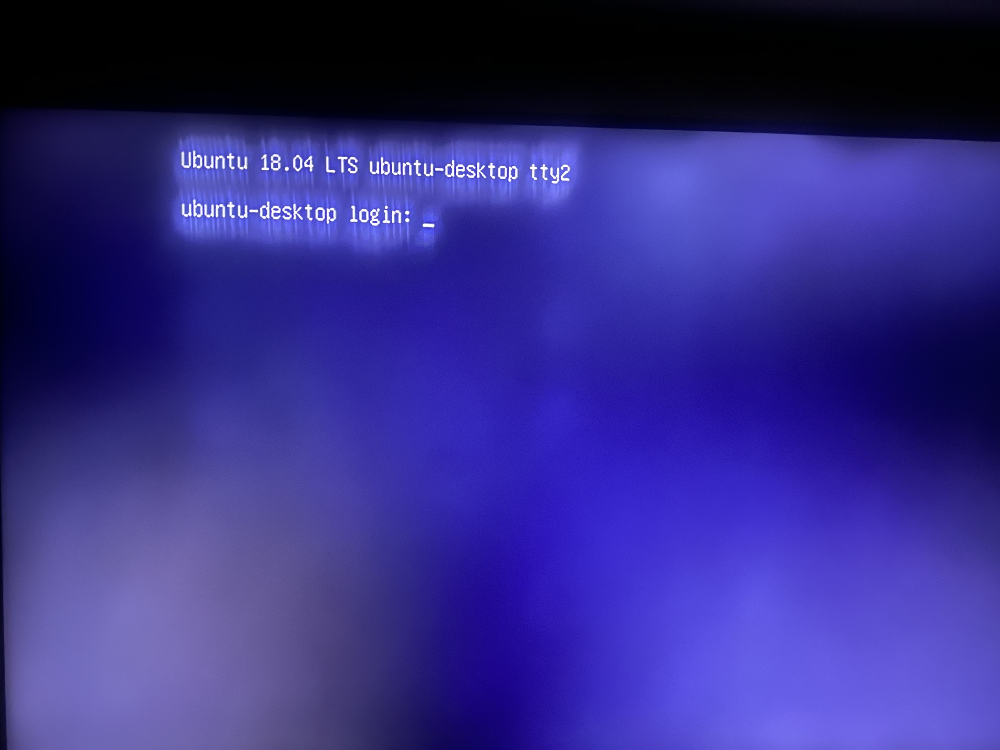

This is the Image File for Ubuntu 18.04 PowerPC and it has been modified to boot on the Nintendo Wii.
The above files are the RootFS files. Those are what you will flash to a USB flash drive that is 16gb or more.
The download below is the download for the BootFS image. This is what you will flash to a SD card.
BootFS .imgUsername - ubuntu
Password - ubuntu
Follow the directions on the homepage..
You will see 3 Kernels, by default it boots the stable v4.4 kernel, under that is unstable v4.5 and under that is testing v4.9.
As of right now WI-FI does not work, I am not sure what the issue is but im sure eventually I will figure it out like I did with Ubuntu 14. Framebuffer support for any desktop type doesnt work.